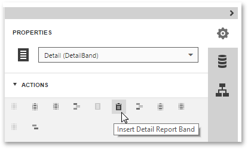
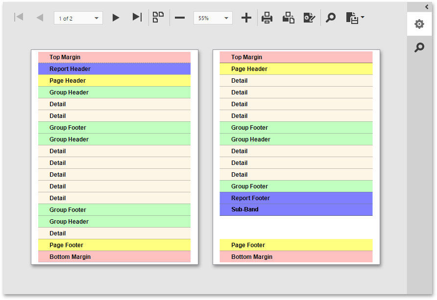

Report Bands
A Report Band represents a specific area on a report page, where report controls are contained. A band is used to define how to render report controls that belong to it. In the Web Report Designer, every report consists of a number of bands, each of a different type.
This document consists of the following sections.
Adding Bands
To add a new band to a report, select the report or any of its bands in the Properties panel and click an appropriate item in the Actions category.

Available Bands
The following table lists the band types.
| Icon | Description |
|---|---|
 |
The Top Margin band represents the top page margin. It is intended for displaying page numbers, or some sort of supplementary information (e.g. current system time or the user name). |
 |
The Report Header is located at the beginning of a report. This band is intended to display some introductory information, e.g., a cover page for a report (the report's name, company logo, date of creation and user name, etc.) And, if you plan to add a Chart that visualizes the report's data, place this control onto this band. |
 |
The Page Header band is located at the top of every page, below the Top Margin or Report Header band. This band is intended to display page numbers or a table header, continued from the previous page. |
 |
The Group Header band is located at the beginning of every group or at the top of the page if it is split across pages. This band specifies grouping criteria and is used to display information at the beginning of a group of records. To learn more, refer to Grouping Data. |
 |
The Detail band is located on a page between all other bands. This band cannot be deleted - the present report structure includes the Detail band in its core. In a data-bound report, the contents of the Detail band are repeated for every data entry. And, if static data is also present in the Detail band, it is repeated with each new entry in the resulting report. For more information about data binding, refer to Providing Data. |
 |
The Detail Report Band is located below the Detail band and is intended to hold the detail report when creating a master-detail report. There can be an unlimited number of Detail Report bands nested inside one another. To learn more about detail reports, refer to Master-Detail Report (Detail Report Bands). |
 |
The Group Footer band is located at the end of every group or at the bottom of the page if this group is split across pages. This band is primarily intended to show summary information for a group. |
 |
The Report Footer finalizes the informative part of the report. It is placed before the Page Footer and Bottom Margin on the report's last page. This band is intended to display some final information, e.g., report totals. |
 |
The Page Footer band is located at the bottom of every page, below the Report Footer and above the Bottom Margin band. This band is intended to display page numbers or a table footer, which is continued on the following page. |
 |
The Bottom Margin band represents the bottom page margin. It is intended for displaying page numbers, or some sort of supplementary information (e.g., current system time or the user name). |
 |
The Sub-Band provides a functional copy of the source band below which it is located. A sub-band's behavior, as well as its position within the report band hierarchy, is dictated by the source band type. Any number of sub-bands can be added to the report band of any type, except for the Top Margin and Bottom Margin bands and the sub-band itself. |
Positions of Band Types
The following image illustrates the relative positions of different band types, and how many times they are rendered in a report.

The Page Header, Page Footer, Top Margin and Bottom Margin bands are rendered in the report preview on every page.
The Report Header and Report Footer bands are rendered in the report preview only once.
The Group Header and Group Footer bands are rendered for every group of records in a report.
The number of times the Detail band is rendered in a report depends upon the number of records returned from the bound data source - one band per record.
To learn how to create a report band and change its layout, refer to Create Report Elements and Adjust the Layout of Report Elements.